Training Erp Gui - Tutorial
How to send Idocs to Sap Btp
Mustafa Alp ·
Introduction
When working with SAP integration technologies, understanding how IDocs are configured and transmitted is an essential skill.
In a traditional SAP ERP environment, sending an IDoc to an external system involves several configuration steps, including RFC destinations, communication ports, partner profiles, and IDoc processing.
But what if you want to learn and practice these concepts without having access to an SAP ERP system?
This is one of the reasons I developed Training ERP GUI, an independent Python-based educational tool designed to simulate common ERP integration transactions and workflows.
In this tutorial, we will configure an outbound IDoc scenario using Training ERP GUI and send an IDoc message to SAP BTP Integration Suite.
The process follows familiar SAP ERP configuration concepts, making it useful for students, junior integration consultants, and developers learning SAP integration technologies.
1. Integration Scenario Overview
Our scenario is straightforward:
Training ERP GUI → HTTPS / IDoc SOAP → SAP BTP Integration Suite
We will use the ORDERS05 IDoc basic type with the ORDERS message type
1. Create an IDoc sender integration flow in SAP BTP.
2. Configure an HTTP destination using SM59.
3. Create an IDoc communication port using WE21.
4. Configure outbound partner parameters using WE20.
5. Send a test IDoc using WE19 and monitor the result.
Training ERP GUI simulates the ERP-side configuration and sends the message directly over HTTPS. It does not reproduce the complete SAP ABAP IDoc runtime, transactional RFC infrastructure, or production delivery guarantees.
2. Configure the IDoc Sender in SAP BTP Integration Suite
First, we need to create an integration flow that accepts incoming IDoc messages.
Open SAP Integration Suite and navigate to Cloud Integration.
Create a new integration flow.
For this tutorial, use a simple integration process with an IDoc Sender adapter and a processing step that allows you to inspect the received message.
Sender Adapter Configuration
Select the sender channel and configure the adapter as follows:
| Parameter | Value |
|---|---|
| Adapter Type | IDoc |
| Address | /malp/poc |
| Authentication | client credentials as Basic |
| Transport | HTTPS |
| Message Protocol | IDoc SOAP |
The relative address is configured in the adapter. After deployment, SAP Integration Suite exposes the corresponding runtime endpoint.
For example:
https://your-tenant-host/cxf/idoc/malp/pocThis is an illustrative URL. Always copy the actual deployed endpoint from SAP Integration Suite rather than constructing it manually.
Deploy the integration flow and verify that it is running.
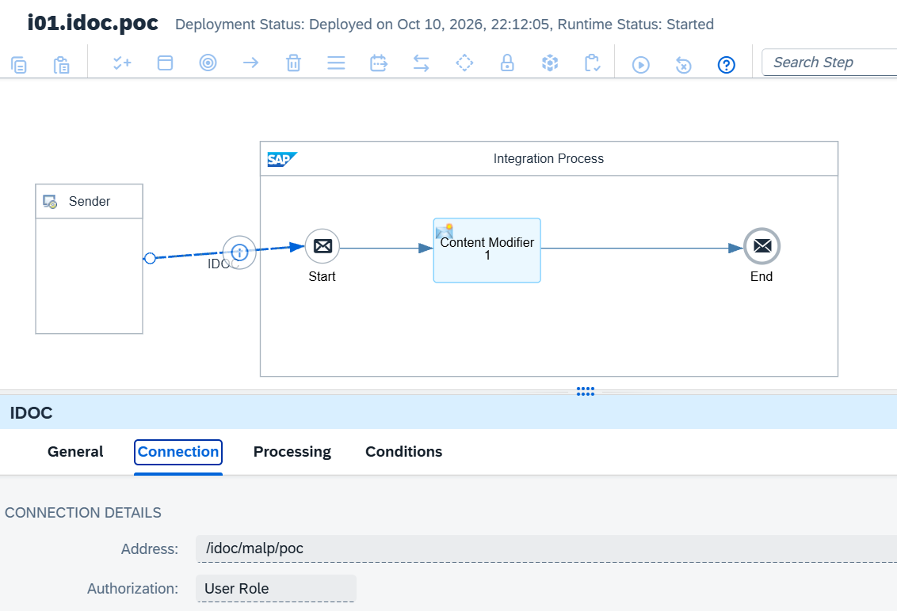
3. Configure the RFC Destination — SM59
Now open Training ERP GUI.
In the transaction command field, enter:
SM59This transaction is used to configure RFC destinations in SAP ERP systems.
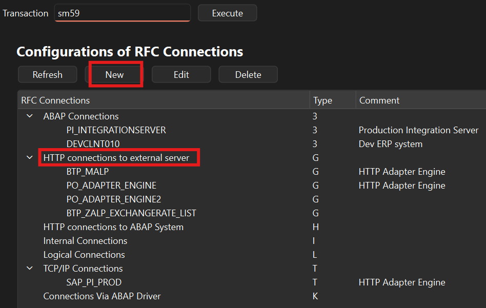
In our simulator, we will use an HTTP destination to define the connection to SAP Integration Suite.
Create an HTTP Destination
Create a new RFC destination with the following configuration:
| Parameter | Example |
|---|---|
| RFC Destination | BTP_IDOC |
| Connection Type | G - HTTP Connection to External Server |
| Description | SAP BTP IDoc Integration |
| Target Host | your-tenant-host |
| Path Prefix | /cxf/idoc/malp/poc |
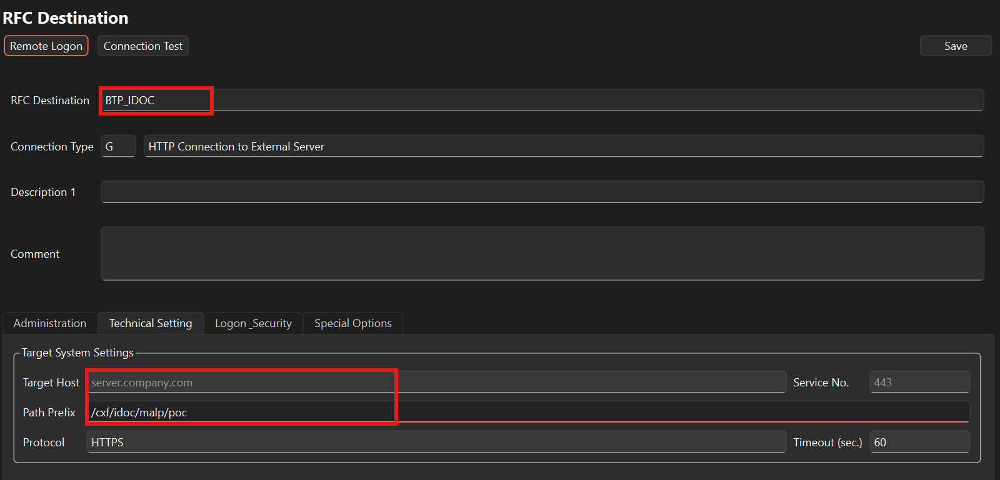
Logon and Security
Configure the authentication details required by your SAP BTP endpoint.
For an educational scenario, this may involve Basic Authentication if it is supported and enabled for your tenant.
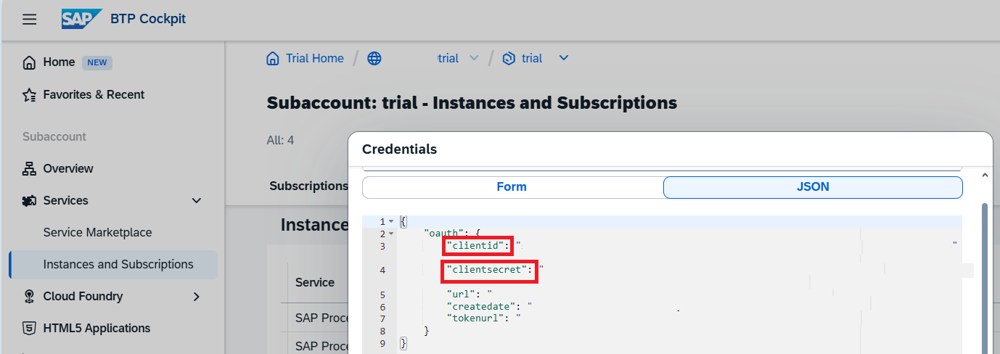
Use a dedicated technical identity with the necessary permissions. Do not store real credentials in a public JSON file or commit them to the project repository.
Save the destination.
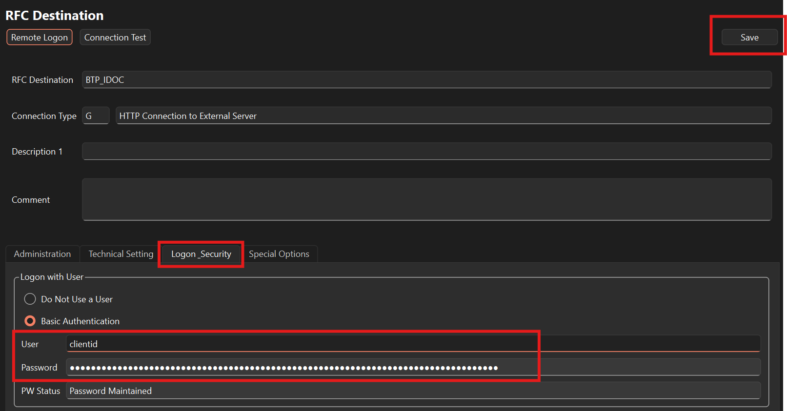
4. Configure the IDoc Port — WE21
The next step is to create an IDoc communication port.
In Training ERP GUI, enter:
WE21The Port Definition screen allows us to create communication ports used in IDoc processing.
Create a Port
Select the Transactional RFC port category and create a new port.
Example configuration:
| Parameter | Value |
|---|---|
| Port | BTPPORT |
| Description | BTP IDoc Outbound Port |
| RFC Destination | BTP_IDOC |
Save the configuration.
The communication port now references the RFC destination created in the previous step.
Important: In a real SAP ERP system, transactional RFC ports have specific ALE/tRFC behavior. Training ERP GUI uses the port-to-destination relationship to simulate outbound routing and sends the IDoc through its Python HTTP implementation.
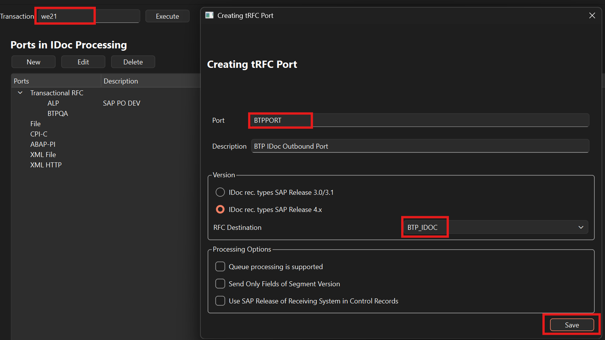
5. Configure the Partner Profile — WE20
Next, we need to define which messages should be sent to the receiver system.
Enter:
WE20This opens the Partner Profiles transaction.
Create a Logical System Partner
Select partner type:
LS — Logical SystemCreate a partner representing the receiving system.
Example:
| Parameter | Value |
|---|---|
| Partner Number | BTPQA |
| Partner Type | LS |
Configure Outbound Parameters
Add a new outbound parameter.
| Parameter | Value |
|---|---|
| Message Type | ORDERS |
| Receiver Port | BTPPORT |
| Basic Type | ORDERS05 |
Save the partner profile.
At this point, the simulator has enough configuration to determine where an outbound ORDERS IDoc should be sent.
The simulated configuration chain is:
Partner Profile → Receiver Port → RFC Destination → HTTPS Endpoint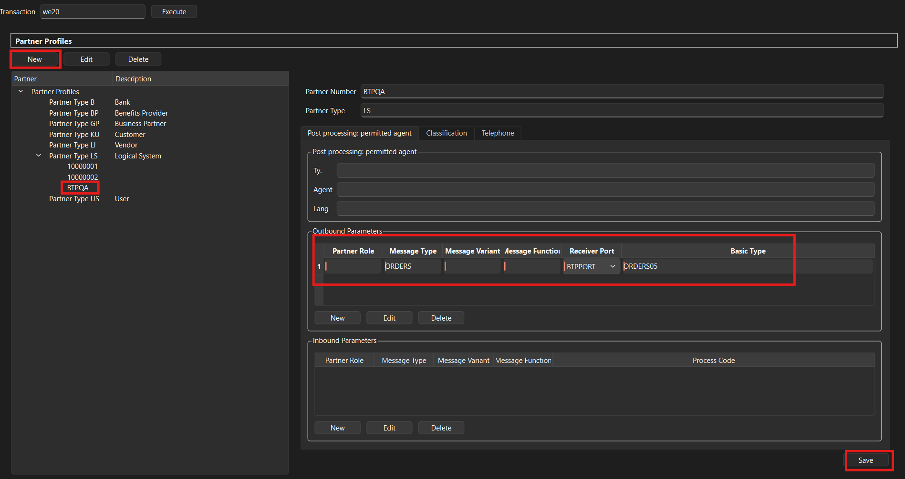
6. Prepare a Test IDoc — WE19
Now we are ready to send a test message.
Get an Idoc number from WE02
Set starting date and press execute button.
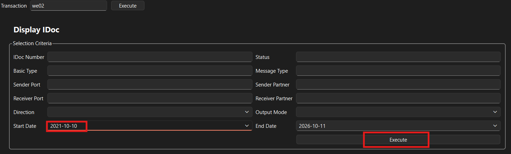
Select an Idoc and press CTRL-C to copy Idoc number
Sending Idoc via WE19
Enter:
WE19This opens the IDoc Test Tool.
In a real SAP ERP environment, WE19 is commonly used to create and process test IDocs.
Training ERP GUI provides a simplified implementation of this workflow.
Enter IDoc number copied from WE02.
For this example, we use:
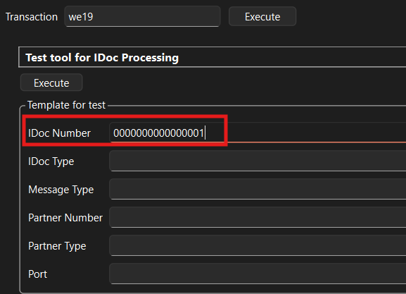
| Basic Type | ORDERS05 |
| Message Type | ORDERS |
| Direction | Outbound |
The IDoc contains a control record (EDI_DC40) and business data segments.
Send the IDoc to SAP BTP
In WE19, select the outbound processing option.
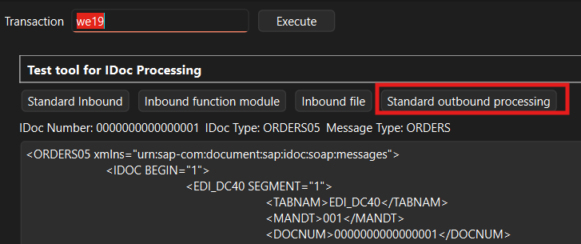
Training ERP GUI performs the following simulated operations:
1. Reads the IDoc control record.
2. Identifies the relevant partner profile.
3. Resolves the receiver port.
4. Retrieves the corresponding RFC destination.
5. Constructs the HTTPS target URL.
6. Wraps the IDoc in a SOAP envelope.
7. Sends the request to SAP Integration Suite.
7. Monitor the Message in SAP BTP
Return to SAP Integration Suite.
Open the message monitoring application and locate the incoming message.
Inspect the following:
- Message processing status
- Sender adapter and integration flow
- Received IDoc payload
- Message processing log
- Any exception details
SAP Integration Suite's IDoc sender adapter provides IDoc-specific headers, including SapIDocType and SapIDocTransferId, which can help with monitoring and correlation.
A successful HTTP response indicates that the request was accepted at the relevant communication layer. It does not automatically prove that all downstream business processing completed successfully.
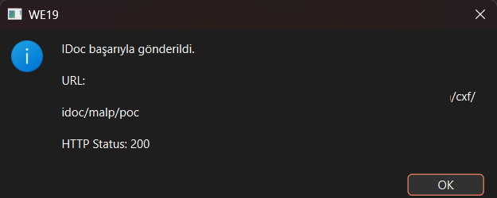
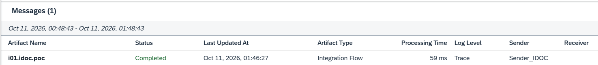
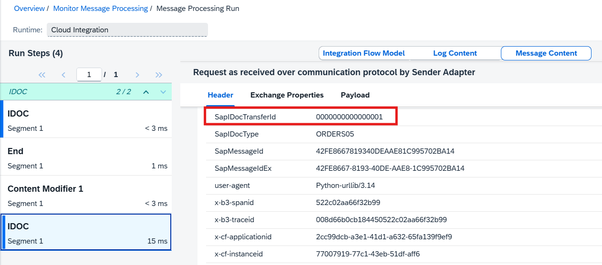
8. What This Tutorial Demonstrates
By completing this scenario, you will have practiced several important integration concepts:
- RFC destination configuration
- IDoc port configuration
- Partner profile configuration
- SOAP-based IDoc communication
- HTTPS connectivity
- SAP Integration Suite IDoc sender configuration
- Message monitoring and troubleshooting
More importantly, you will have followed a workflow similar to the one used when configuring IDoc communication in SAP ERP systems.
Training ERP GUI is not a replacement for SAP ERP or SAP Integration Suite. Its purpose is to provide an accessible environment for learning the underlying concepts and practicing common configuration workflows.
Conclusion
Understanding IDoc communication requires more than knowing how to send an XML message.
It involves understanding the relationship between logical systems, partner profiles, communication ports, destinations, message structures, and integration middleware.
Training ERP GUI brings these concepts together in a standalone educational environment, allowing developers and students to experiment with ERP-style integration workflows without requiring a complete SAP ERP installation.
This tutorial is one example of how the application can be used for hands-on integration training.
Project
Training ERP GUI
An independent educational ERP integration simulator built with Python and PySide6.
Project repository: https://gitlab.com/alp.mustf/trainigerpguipublic.git
Feedback, suggestions, and contributions are welcome!
Disclaimer
Training ERP GUI is an independent educational project and is not affiliated with, endorsed by, or sponsored by SAP SE.
SAP and other referenced product names are trademarks or registered trademarks of their respective owners. All examples in this article use illustrative configurations and synthetic test data.